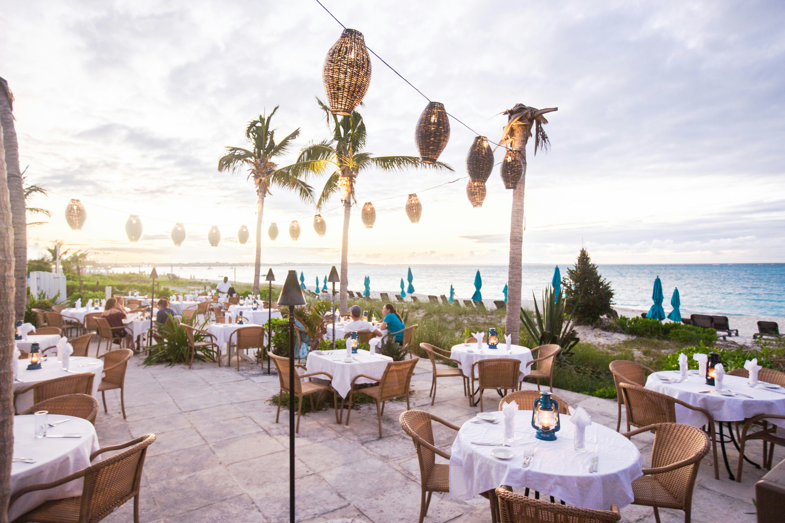
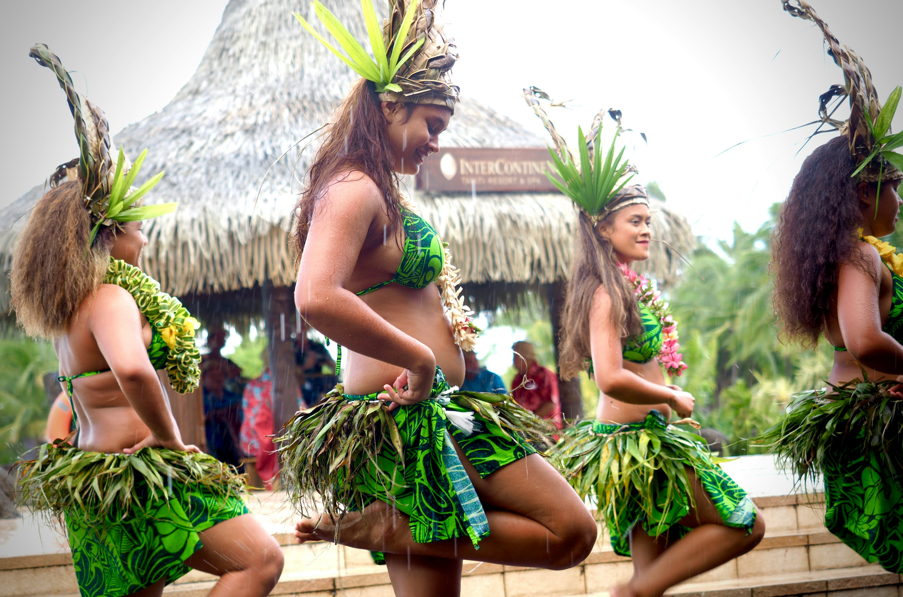

RESTAURANTS
Taniti currently has 10 restaurants: five serve mostly local fish and rice, three serve American-style meals,
and two serve Pan-Asian cuisine.

ATTRACTIONS
Most tourists spend most of their time in Taniti City, which boasts native architecture and nearby white,
sandy beaches that encircle Yellow Leaf Bay. Other popular activities include boat or bus tours of the island,
hikes in the rainforest, or visits to Taniti’s active volcano.

ENTERTAINMENT
Most people visit a local history museum, go on chartered fishing tours, snorkeling,
zip-lining in the rainforest, visiting several pubs, including a microbrewery, dancing at a new dance club, see a movie,
taking helicopter rides, playing at an arcade, visiting art galleries, and bowling.
Also, a nine-hole golf course should be operational by next year.